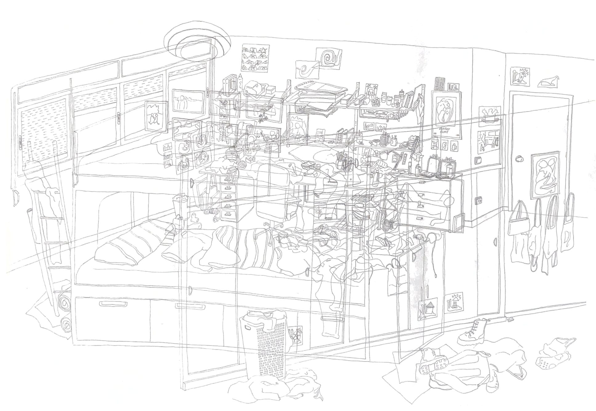

Autorretrat
del col·lapse.
El projecte neix d’un període d’aclaparament en què l’acumulació de responsabilitats i emocions acaba transformant l’estrès en ansietat. La meva intenció no és buscar solucions, sinó representar visualment aquest estat de saturació. Trobo en el desordre de la meva habitació un reflex del meu malestar, on l’acumulació progressiva ha acabat generant una sensació de caos difícil de gestionar. Per això, decideixo representar-la mitjançant un dibuix lineal des de la perspectiva del mirall, convertint-la en una mena d’autoretrat de la meva ment. Superposo tres perspectives diferents de l’habitació per intensificar la sensació de desordre i saturació. Creant una composició en què la mirada es perd, sense saber on fixar l’atenció ni per on començar a posar ordre, reproduint així la sensació d’ansietat que dona origen al projecte.

Autoretrat del col·lapse. 2026.
Dibuix lineal amb punta fina negre de 0,2 mm sobre paper de 300 g/m².
La meva habitació representada des de tres perspectives superposades, vista des del punt de vista del mirall.
75 x 110 cm.